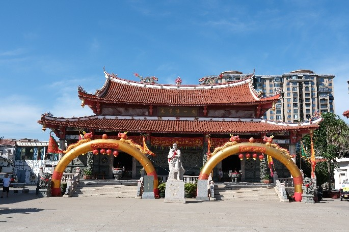
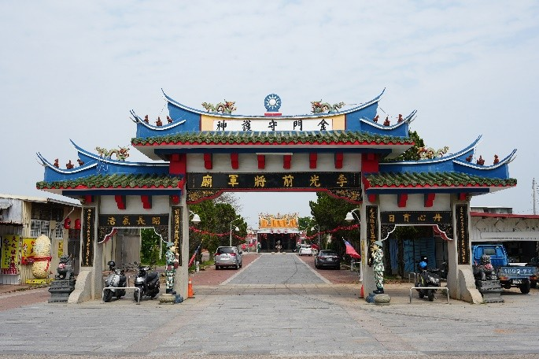

從戰爭英雄到地方守護神：古寧頭戰役之兩岸軍人神格化信仰比較
黃柏洋
關鍵字 : (古寧頭戰役、神格化信仰、戰爭集體記憶、地方認同)
摘要
本研究以金門縣李光前將軍廟與泉州惠安縣解放軍烈士廟為核心田野調查對象，聚焦一九四九年古寧頭戰役後，兩岸軍人神格化現象之生成機制與歷史演變，從信仰實踐、空間形構與政治體制三個層次，探討戰爭死亡如何被轉化為具有持續性社會意義的宗教文化形式。研究關注不僅是軍人「成神」的結果，更是其在不同國族敘事與治理結構下，賦予神聖性的條件、詮釋框架與實踐路徑，藉此呈現戰爭記憶如何透過儀式、身體行動與紀念空間的日常運作，被內化為地方社會可反覆參與的文化機制。
研究結合文獻分析、田野觀察與深度訪談，從實踐者的觀點理解軍人神祇的靈驗敘事、祭祀動機與參與經驗，藉以說明將軍廟信仰如何從戰爭紀念設施，轉化為地方社會的日常信仰中心，並且成為情感投射與集體認同建構之場域。最後分析信仰如何保留戰爭歷史記憶，以及如何轉化為具有超越政治分歧、強化社群認同的文化力量。
金門與惠安同處閩南文化圈，自明清海防衛所設立以來即具備緊密的防禦體系。1949年國共內戰關鍵的「古寧頭戰役」（金門戰役），造成兩岸實質分治。金門歷經長達數十年的戰地政務與軍事戒嚴，惠安則歷經社會主義改造與文化大革命。然而，同屬閩南信仰底層的兩地，卻不約而同在戰後將陣亡軍人立廟奉祀，發展出金門西浦頭「李光前將軍廟」與惠安崇武西沙灣「解放軍烈士廟」（廿七君廟）兩間軍人性質之信仰場域。
在政治高度對立與制度相異的脈絡下，本研究提出以下核心問題意識：
兩地雖同屬閩南信仰圈 ，但在政治立場嚴重對立的兩岸體制之下，為何戰役中陣亡的軍人，能在地方社會中被神格化，並轉化為結構相似、可被持續祭祀的信仰對象？
作為戰爭記憶的有形載體，李光前將軍廟與解放軍烈士廟如何透過其選址位置、空間配置、建築語彙與儀式動線，將戰爭死亡轉化為可被觀看、可被行走與可被反覆實踐的「記憶場域」？
在不同政治體制與意識形態框架之下，國家權力如何介入軍人由戰爭英雄轉化為信仰對象的過程？金門之戰地政務與戒嚴體制，以及中國大陸之無神論與革命烈士制度，分別如何對軍人神格化信仰進行限制、引導或再定義，其背後所反映的治理邏輯為何？


本研究採人文學與民俗學之質性研究取徑，主要方法如下：
文獻分析法：蒐集兩岸地方誌（金門縣誌、惠安縣誌）、聚落村史、國防部史政編譯局檔案與國史館檔案，釐清戰史與廟宇沿革。
田野觀察法：實地調查金門西浦頭將軍廟與惠安崇武烈士廟，詳實記錄建築配置、神像形制、家戶香案與年度慶典（金門農曆九月初八酬醮慶典、惠安九月十七日殉難紀念日）。
深度訪談法：針對廟管會主委、建廟當事人後代、乩身、地方文史工作者及耆老進行半結構式訪談。
李光前將軍廟的歷史脈絡，是由一場關鍵戰役、軍事殉職，逐步歷經民間安魂立祀、國家追贈認可，最終深層融入地方信仰體系的轉化過程。1949年10月25日凌晨古寧頭戰役爆發，解放軍登陸金門北部。當日下午，李光前奉命率四十二團由西浦頭向古寧頭方向推進反攻。在西浦頭與林厝之間的一三二高地一帶，部隊遭共軍機槍火力側射受阻，李光前為激勵士氣親自帶頭衝鋒，不幸遭砲火擊中殉職，時年三十二歲，為古寧頭戰役中陣亡官兵中軍階最高者。戰後中華民國政府追贈其為陸軍上校。1971年（民國60年），居民因顯靈傳說與祈求四境安寧，正式在陣亡地集資建廟奉祀，初稱為「軍府萬興公廟」或「軍府爺廟」。這一階段標誌著李光前從「戰場上需要被安撫的客死孤魂（厲鬼）」，正式轉變為具備神聖正神位格的守護神雛形。在發展過程中，出現國防部打破法規追贈少將的特殊現象，完成了國家制度對民間神格化的追認。在儀式上，李將軍已高度「王爺化」：其神輿於酬醮祭典中與西浦頭境主神明並行出巡，家戶於門前設案恭迎，兼具除煞淨境功能；同時廟中設有乩童傳達神諭，體現深層閩南信仰文化。信眾結構涵蓋在地村民與輪調之戍守官兵，成為軍民一家的生活信仰。此外，每年秋祭由金防部指揮官率軍政官員依儒家規範行三獻公祭禮，公祭告竣後隨即交接予民間進行熱鬧廟會，展現官方與地方的儀式分工。
1949年9月17日，中國人民解放軍第十兵團28軍84師251團部隊進駐並集結於福建省惠安縣崇武鎮西沙灣海灘，進行登陸練兵，準備投入後續解放金門的渡海作戰。當日正值沿海集市，國民黨空軍戰機突襲西沙灣進行俯衝掃射與轟炸。為掩護海灘上的群眾，解放軍以機槍對空射擊將敵機火力引向自身。其中13歲女童曾阿興，被多名士兵用血肉之軀掩護在身下，轟炸結束後，女童平安脫險，但掩護她的24名解放軍戰士全部壯烈犧牲。戰後，地方百姓與曾阿興母女共同掩埋了烈士遺體，並在烈士墓旁焚香燒紙。次日墓旁立起一塊刻有「廿四君靈位」的小石碑，成為當地居民最初祭拜烈士的場所。在隨後開展的文化大革命「破四舊」運動中，民間信仰與宗教設施遭受全面打擊，烈士墓旁原本搭蓋的小屋與紀念碑遭到紅衛兵砸毀破壞，宗教性祭祀被視為「封建迷信」而遭嚴格查禁。儘管廟宇被毀、面臨巨大的政治壓力，曾恨仍冒著風險堅持前往烈士犧牲地進行私下祭拜與清掃，維繫了長達數十年的情感承諾與報恩香火。進入1990年代，地方政府獲悉曾阿興長年報恩的事蹟。官方體制研判，民間自發感念子弟兵既符合知恩圖報的傳統美德，又能作為「革命英雄主義教育」與「密切軍政軍民關係」的絕佳載體，因而正式轉向正面支持。1996年新廟正式落成，建築規模大幅擴建。曾阿興將崇武海域另外3位解放軍烈士神位一併請入，與西沙灣犧牲的24位戰士合祀，正式定名為「廿七君廟」。2002年8月，惠安縣委、縣政府將解放軍烈士廟正式評定為「愛國主義教育基地」。這一節點使該空間正式脫離民間灰色私廟屬性，被制度性納入國家意識形態與黨政教育網絡之中。
本研究證實，兩岸軍人神格化並非單向的政治宣傳或單純的民俗延續，而是「國家權力」、「地方社會」與「信仰傳統」三者持續協商的動態產物。在金門，戰地政務在維護國族忠烈的前提下，默許並融入閩南王爺的信仰系統，使軍人真正融入地方神祈，成為具有生活庇佑實質的「地方守護神」。在惠安，民間報恩情感雖透過造像立廟得以物質化，但國家意識形態以嚴格排除「封建迷信」為底線，將其馴化為披著民間香火外衣的紅色教育陣地。兩地軍人廟宇的實踐路徑，生動展現了閩南文化底層面對現代國家體制與戰爭創傷時，所演繹出之多重韌性與象徵策略。
王見川、李世偉（2000）。臺灣的民間宗教與信仰。台北市：博揚文化。
戚長慧（2001）。子魂魄兮為鬼雄~愛國將軍信仰。金門季刊，(71)，42-45。
戴寶村（2004）。B29與媽祖：臺灣人的戰爭記憶。國立政治大學歷史學報，(22)，223-275。
張志相（2007）。台灣烏溪流域「七將軍廟」源流考論。逢甲人文社會學報，(14)，197-234。
蔡錦堂（2010）。臺灣的忠烈祠與日本的護國神社．靖國神社之比較研究。師大臺灣史學報，(3)，3-22。
林秀幸（2012）。縫隙中的抉擇：地方與國家交鋒下的象徵建構。臺灣社會學刊，(49)，103-146。
陳緯華（2012）。資本、國家與宗教：「場域」視角下的當代民間信仰變遷。台灣社會學，(23)，1-49。
謝貴文（2013）。論神明與地方關係的建立與發展──以高雄地區的保生大帝信仰為例。高雄文獻，3(2)，34-66。
陳緯華（2017）。國家、象徵暴力與民間信仰：以鹿耳門天后宮為例。文化研究，(25)，139-182。
林美容、三尾裕子、劉智豪（2017）。從田中綱常到田中將軍的人神蛻變：無關族群的民眾史學。臺灣文獻，68(4)，147-179。
陳緯華（2021）。民間信仰與記憶政治：延平郡王祠與國族認同建構。台灣社會學，(42)，61-108。
陳永富（2022）。金門村史：錦浦榮光‧西浦頭村史。金門縣：金門縣文化局。
林祐安（2023）。臺灣的日本人神明、鬼故事與戰爭記憶。史轍，(16)，1-53。
江仁傑（2024）。解構鄭成功——英雄、神話與形象的歷史。台北市：三民書局。
李淑如（2024）。異鄉人成神：臺南地區日本人成神的信仰與傳播研究。民俗曲藝，(223)，153-214。
王宏男（2026）。金門萬神爺廟與將軍廟田野調查研究。區域與文化研究，(7)，25-49。
Connerton, Paul（2000）。How Societies Remember. Cambridge: Cambridge University Press, 1989. 保羅．康納頓（Paul Connerton）著，納日碧力戈譯，社會如何記憶，上海人民出版社。
詹姆斯．斯科特James C.Scott （1990）。Domination and the Arts of Resistance: Hidden Transcripts，Yale University Press。黃楷君譯（2024）。支配與抵抗的藝術：潛藏在順服背後的底層政治，公開與隱藏文本的權力關係，麥田出版社。